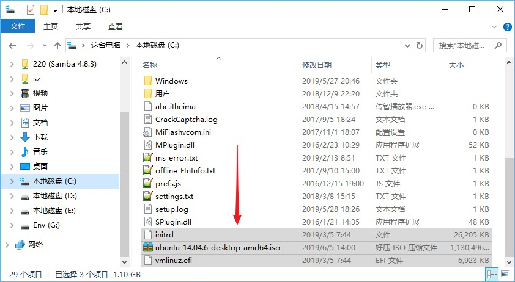

05-Windows+Ubuntu双系统
无需光盘、U盘启动盘，使用EasyBCD安装Windows+Ubuntu双系统
支持Windows7、Windows10 + Ubuntu14.04，Ubuntu16.04，Ubuntu18.04
目前只支持Legacy引导的MBR分区，单硬盘引导，多硬盘引导
暂不支持UEFI引导的GPT分区，如果区分GPT和MBR参见二、准备磁盘空间-3. 记住你的磁盘类型
一、安装前资源准备¶
- Ubuntu系统镜像
ubuntu-14.04.6-desktop-amd64.iso
- EasyBCD软件
二、准备磁盘空间¶
1. 打开磁盘管理¶
右键计算机 –> 管理 –> 储存 –> 磁盘管理
2. 释放出100G-300G的空间¶
-
可以直接将整个盘进行删除卷操作
-
注意，本教程本着不主动，不拒绝，不负责的精神，不对任何数据负责。不小心删掉重要的数据，后果自负哦，一定要看清楚再删除。
- 也可以对指定磁盘进行压缩卷，得到需要的空间
注意不要把你的Windows系统盘删除了
3. 记住你的磁盘类型¶
- 记下你装系统的硬盘用的是GPT还是MBR！后边要用到，很重要！
三、配置引导环境¶
-
将系统文件iso的casper中的 initrd (有的是initrd.lz) 和 vmlinuz.efi 解压出来
-
将安装及引导文件放到C盘根目录

- 打开EasyBCD软件，安装启动项
可以看到目前只有一个Win7或Win10启动项。选择“添加新条目”，然后选择“NeoGrub”，点击“安装”。
- 点击后边的“配置”按钮，将以下内容覆盖进去，保存并关闭文件即可
title Install Ubuntu
root (hd0,0)
kernel (hd0,0)/vmlinuz.efi boot=casper iso-scan/filename=/ubuntu-14.04.6-desktop-amd64.iso locale=zh_CN.UTF-8
initrd (hd0,0)/initrd
title reboot
reboot
title halt
halt
这里注意参数！
这里注意参数！
这里注意参数！
-
(hd0,0)指的是你刚刚存放安装及引导文件的C盘根目录盘符，每个人的C盘位置可能不同，所以一定要根据具体情况进行调整。 -
最后一行的
initrd (hd0,0)/initrd，如果之前解压出来的文件名是initrd.lz，这里就要写成initrd (hd0,0)/initrd.lz
至此，引导及安装文件准备已完成，准备重启电脑开始安装，此时如果你将要重启电脑，建议使用手机打开本教程，继续进行安装指导。
四、重启进入安装流程¶
- 重启电脑，进入NeoGrub引导
重启电脑后，可以看到多了一个启动项“NeoGrub引导加载器”，选择该项Enter进入，然后选择“Install Ubuntu”，另外两项分别是“reboot重启”和“halt关机”，是为了防止安装出错而设的，这个在之前的menu.lst配置文件中已经设定好了。
- 执行卸载命令
随后就进入一个小系统，别以为这就装好了，此时最重要的一步，通过快捷键Ctrl+Alt+T打开终端，输入：
-
MBR
sudo umount -l /isodevice -
GPT
sudo umount -l /dev/sdxx
注意空格和小写的-L，执行后就可以双击桌面上的"安装Ubuntu14.04LTS"安装图标进行安装了
五、安装Ubuntu并配置¶
1. 初始选项¶
接下来选择简体中文；如果想让/home目录里的内容是英文的，可以进系统之后通过命令修改；

不用选中安装第三方软件和更新，否则安装会很慢，为保险起见可以在右上角断开网络连接；
安装类型选择“其他选项”。
2. 硬盘分区¶
分区方案推荐
方案一：适用于预算空间300G以下的同学
| 分区表 | 大小 | 描述 |
|---|---|---|
| 引导分区 | 512M | 具体见下方步骤 |
| swap交换空间 | 16G | 不大不小，正好16x1024M = 16384M |
| / 根目录 | 剩余全部空间 | 本来预算就没多大空间，就不要再分给其他目录了 |
方案二：适用于预算空间300G及以上的同学
| 分区表 | 大小 | 描述 |
|---|---|---|
| 引导分区 | 512M | 具体见下方步骤 |
| swap交换空间 | 16G | 不大不小，正好16x1024M = 16384M |
| / 根目录 | 100G | 或使用剩余全部空间 |
| /home 用户根目录 | 剩余全部 | 分开/和/home，好处是一旦系统崩溃，只需要重装 /根目录就可以了。/home可以保留 |
不用搞/tmp，/usr那些个，要不然任何哪个空间一旦不够用，再调整就很麻烦了。
A）引导分区¶
此时，注意了！要根据你的硬盘模式决定怎么启动，根据之前步骤的二、准备磁盘空间 - 3. 记住你的磁盘类型中记录下的磁盘类型，来决定这里的引导分区怎么装。
引导分区的安装分为两种方式：
1）GPT分区模式
创建512M的逻辑分区，空间起始位置，类型为efi系统分区
当然，如果是MBR分区类型的，这里的菜单里是没有EFI系统分区的
2）MBR分区模式，
创建512M的逻辑分区，空间起始位置，用于Ext4，挂载到/boot目录
B）swap交换空间¶
创建16384M的逻辑分区，空间结束位置，用于交换空间（Swap Space），16G=16x1024M=16384M
C）/ 根目录¶
剩余空间全分给/根目录，类型为主分区，位置为空间起始位置，用于Ext4
D）/home 用户主目录¶
如果你选择了方案二，也可以自行挂载/home，图和上边类似。
大小为剩余全部，主分区，空间起始位置，Ex4日志文件系统。挂载点选/home
前方重点预警！
前方重点预警！
前方重点预警！
选择安装启动器的设备¶
一定要选择正确的引导设备！
MBR分区类型：
引导目录为/boot那个分区，要选择对应的设备，本例为/dev/sda6！一定要根据自己的/boot目录选设备！！！
GPT分区类型：
引导目录为您刚新建的ef类型i分区，要选择对应的设备，WindowsBootManager也是efi，不要选错了。本例为/dev/sda8！一定要根据自己的情况选设备！！！
3. 地区及用户名设置¶
设置地区-Shanghai
设置键盘语言-汉语

设置用户信息
六、更新引导菜单¶
至此系统安装好了，开机回到windows系统，打开EasyBCD，设置系统引导
添加新条目–>Linux/BSD，MBR类型选GRUB(Legacy)，GPT类型选GRUB2
名称随便填（建议Ubuntu14.04）
驱动器选择刚才新建的名为/boot的分区或efi分区。大概512M左右的那个。然后点击添加条目。
然后通过查看设置，确认引导已完毕。
至此，双系统安装流程完毕，我们可以愉快的切换双系统了！
名词解释¶
- UEFI(Unified Extensible Firmware Interface)：全称“统一的可扩展固件接口”，是EFI的升级版，用于取代传统BIOS；
- Legacy/CSM：大多数UEFI主板为了兼容，保留了传统BIOS的启动方式，开启的相关选项为Legacy或CSM；